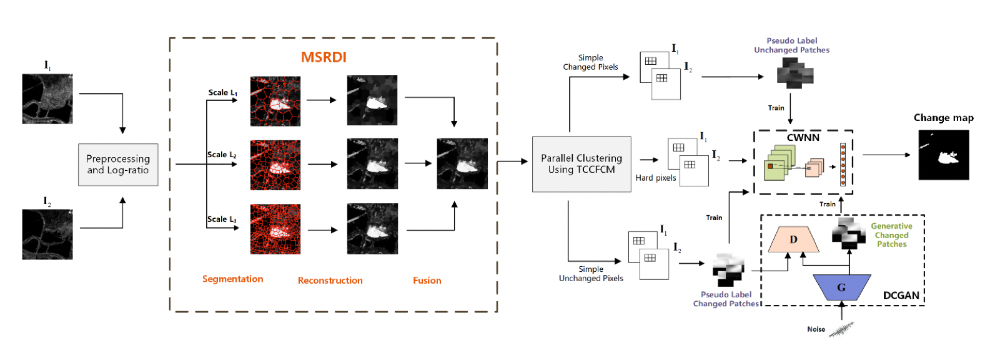
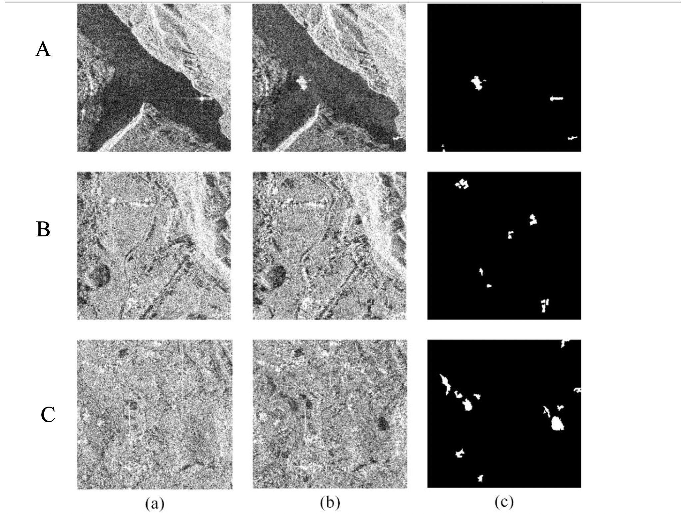
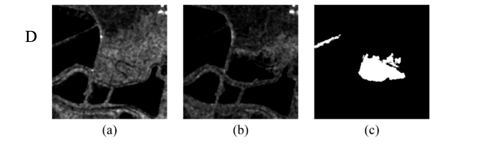
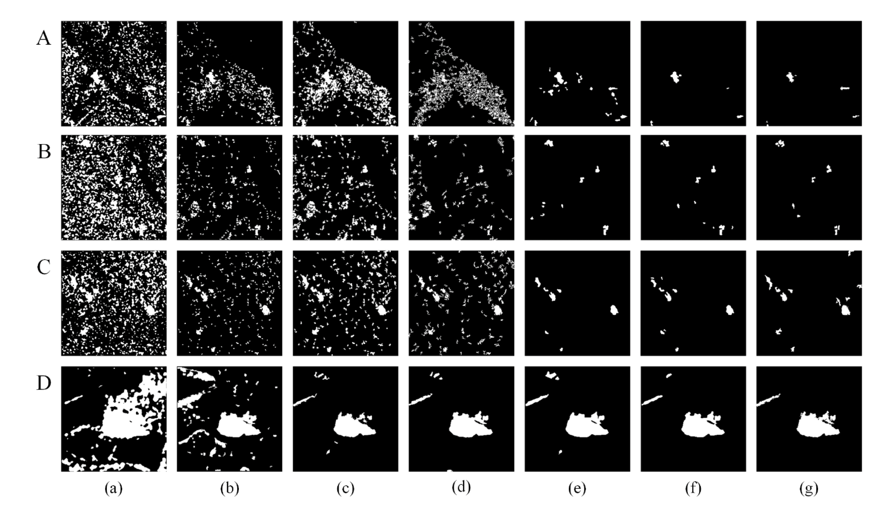
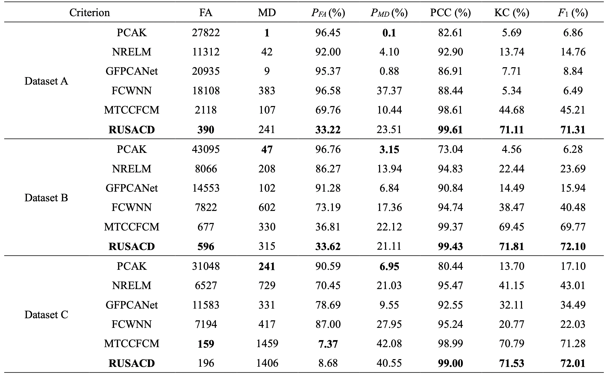
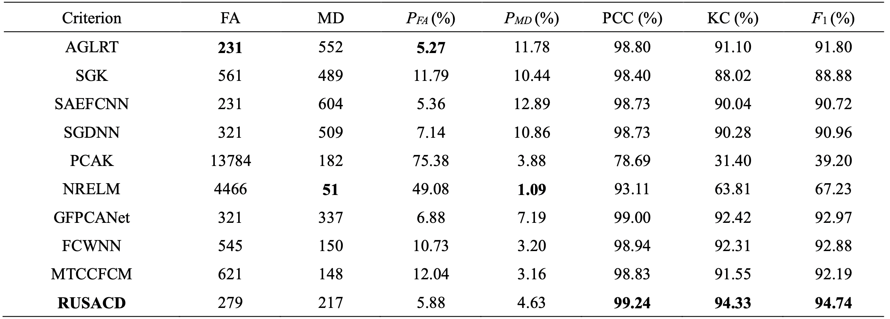

RUSACD
Robust Unsupervised Small Area Change Detection from SAR Imagery Using Deep Learning
RUSACD: Robust Unsupervised Small Area Change Detection from SAR Imagery Using Deep Learning (Zhang et al. 2020)
Abstract
La detección de cambios en áreas pequeñas a partir de un radar de apertura sintética (SAR) es una tarea muy difícil. En este trabajo, se propone un enfoque robusto no supervisado para la detección de cambios en áreas pequeñas a partir de imágenes SAR multitemporales utilizando el aprendizaje profundo. En primer lugar, se desarrolla un método de reconstrucción de superpíxeles multiescala para generar una imagen de diferencia (DI), que puede suprimir el ruido de moteado de forma efectiva y mejorar los bordes mediante la explotación de información local y espacialmente homogénea. En segundo lugar, se propone un algoritmo de clustering de c-means difuso de dos etapas para dividir los píxeles de la DI en clases cambiadas, no cambiadas e intermedias con una estrategia de clustering paralela. A continuación, se construyen parches de imagen pertenecientes a las dos primeras clases como muestras de entrenamiento de pseudoetiquetas, y los parches de imagen de la clase intermedia se tratan como muestras de prueba. Por último, se diseña y entrena una red neuronal convolucional wavelet (CWNN) para clasificar las muestras de prueba en clases modificadas o no modificadas, Se combina con una red convolucional generativa adversarial (DCGAN) para aumentar el número de clases cambiadas dentro de las muestras de entrenamiento de las pseudo-etiquetas. Los experimentos numéricos en cuatro conjuntos de datos reales de SAR demuestran la validez y la solidez del enfoque propuesto, logrando una precisión de hasta el 99,61% para la detección de cambios en áreas pequeñas.
- Keywords:
-
Change detection; Synthetic aperture radar; Difference image; Fuzzy c-means algorithm; Deep learning.
Repostorio: https://github.com/River-sh/A-robust-unsupervised-small-area-change-detection
Diagrama General

Pros y Contras
Pros:
- No supervisado
- Áreas pequeñas
- Mejor performance casos con bajo ruido (moteado)
- Evaluación de resultados con otros métodos
Contras:
- No testeado con Sentine-1 (SAR COSMO-SkyMed entre 2016 y 2017 y SAR ERS-2 entre 2003 y 2004)
- Repositorio en matlab
Datasets
Se utilizaron cuatro conjuntos de datos SAR multitemporales reales (Tabla 1) para evaluar el rendimiento del enfoque propuesto. Tres de estos cuatro conjuntos de datos fueron adquiridos sobre la provincia de Guizhou en China por el sensor SAR COSMO-SkyMed en junio de 2016 y abril de 2017. Como se muestra en la Fig. 6, el primer par de imágenes (conjunto de datos A) con el mapa de referencia del suelo consiste en montañas y un río, el segundo par de imágenes (conjunto de datos B) con el mapa de referencia del suelo incluye colinas, llanuras y edificios, y el tercer par de imágenes (conjunto de datos C) con el mapa de referencia del suelo es principalmente llanuras. El último par de imágenes (conjunto de datos D) fue adquirido sobre la ciudad de San Francisco, Estados Unidos, por el sensor SAR ERS-2 en agosto de 2003 y mayo de 2004 (Fig. 7). En los conjuntos de datos A, B y C se aprecia el ruido de moteado, que supone un gran reto para la detección de cambios. A partir de los mapas de referencia redondos de la Fig. 6-7, está claro que la proporción de píxeles cambiados es extremadamente pequeña en comparación con los píxeles no cambiados. El conjunto de datos D es un punto de referencia en el que hay menos ruido y los cambios no pueden considerarse como cambios de área pequeños. Este conjunto de datos se utiliza para demostrar la solidez de nuestro enfoque propuesto.


Resultados
Para demostrar la eficacia del RUSACD propuesto, se compararon cuatro métodos de referencia, entre ellos: PCA k-means (PCAK) (Celik, 2009), relación basada en la vecindad y máquina de aprendizaje extremo (NRELM) (Gao et al., 2016), extracción de características de Gabor y FCM con PCANet (GFPCANet) (Gao et al., 2016), y FCM con CWNN (FCWNN) (Gao et al., 2019). También aplicamos TCCFCM para agrupar el MSRDI en dos categorías (cambiado y sin cambios) como método de detección de cambios MTCCFCM de referencia. Los resultados experimentales se muestran en la Fig. 8, mientras que las métricas de precisión cuantitativas se indican en la Tabla 2. Además, otros métodos utilizados para la comparación en el conjunto de datos D (Tabla 3) incluyen la detección guiada por saliencia con agrupación de k-means (SGK) (Zheng et al., 2017), el autoencoder apilado y FCM con CNN (SAEFCNN) (Gong et al., 2017), la red neuronal profunda guiada por saliencia (SGDNN) (Geng et al., 2019) y la prueba de relación de verosimilitud generalizada adaptativa (AGLRT) (Zhuang et al., 2020).
TODO: Revisar y agregar bibliografia


